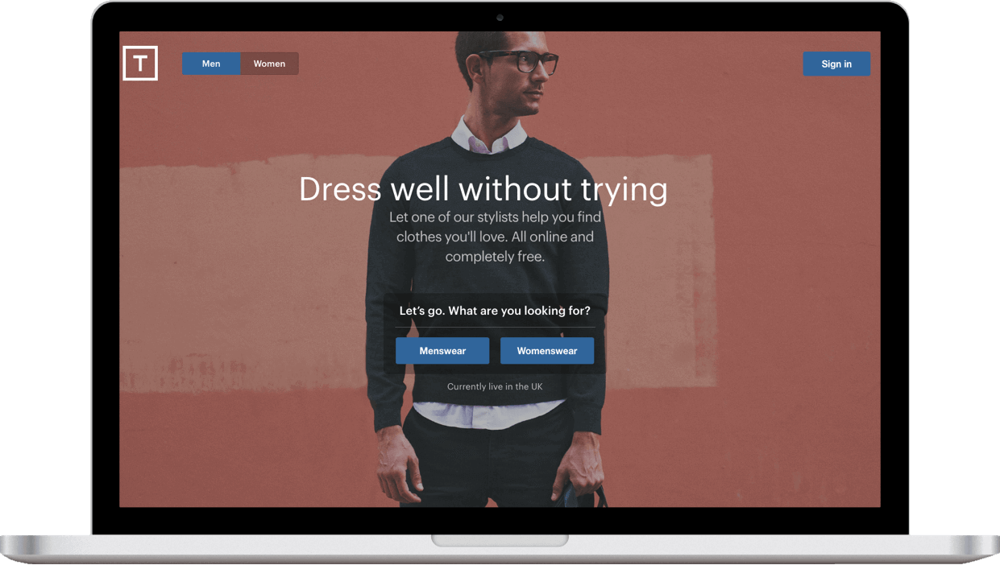
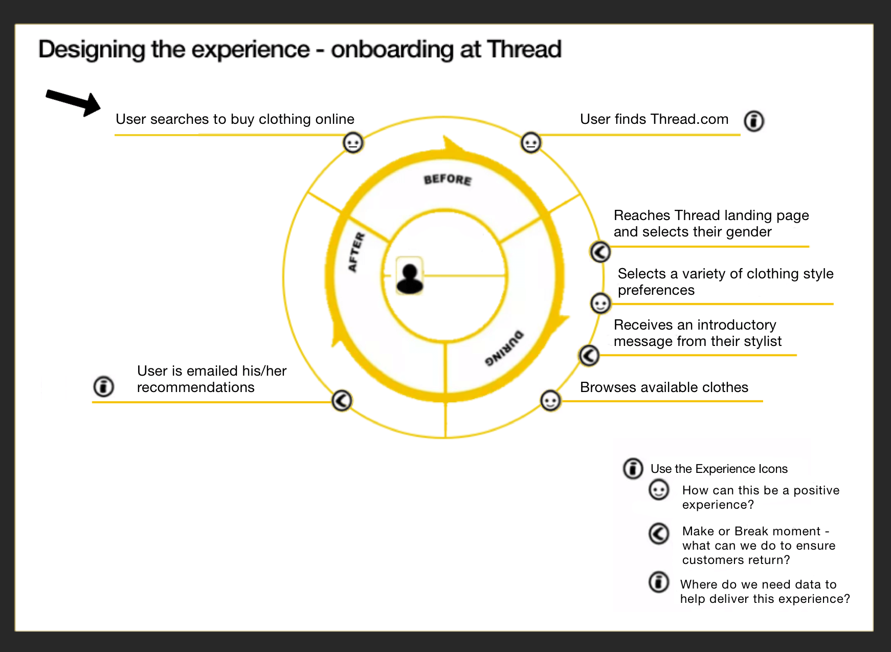
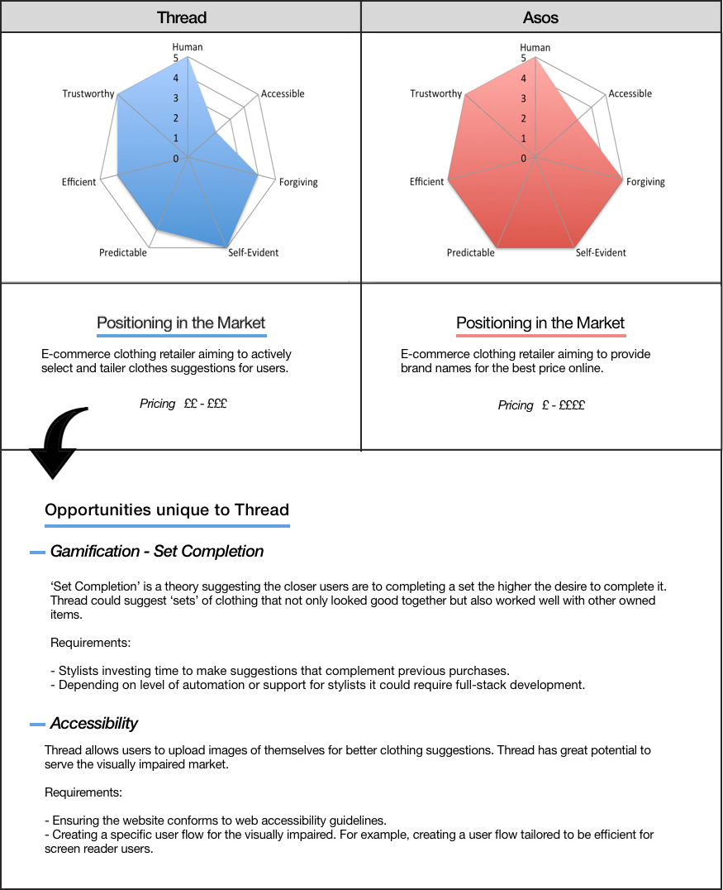

Michael Lo
Junior UI Designer
Work
CV

Thread.com
My User Experience with an online clothing company.
UI Tools used in this project
Sketching
User Journey Mapping
Competitor Analysis
My User Experience with Thread.com
Thread.com is an e-commerce store for clothing. They have a unique user journey providing users with stylists. Here’s a typical user journey.
A User Journey
A illustrated storyboard to bring the journey to life:
A Broader User Journey Map
Providing an alternative view of key touchpoints in the user journey

Competitor Analysis

Next Project